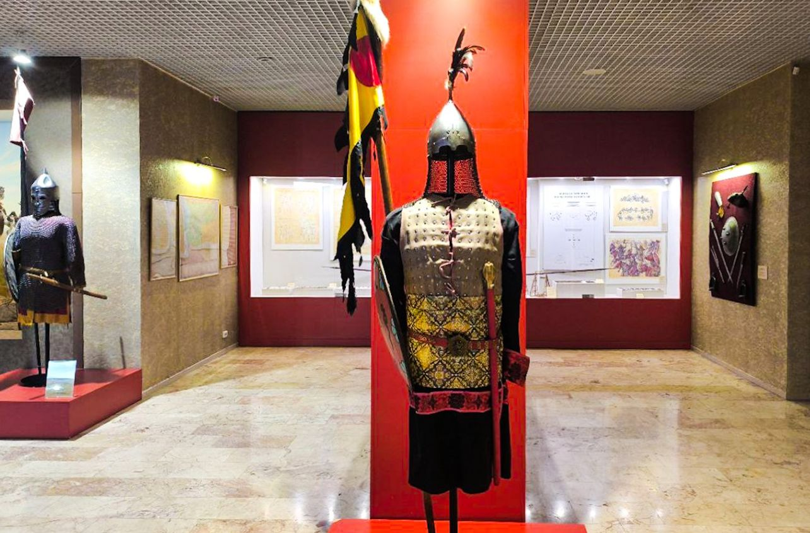
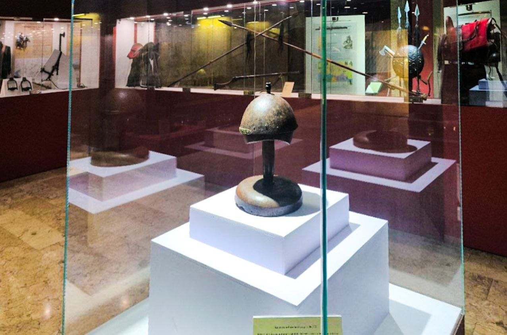
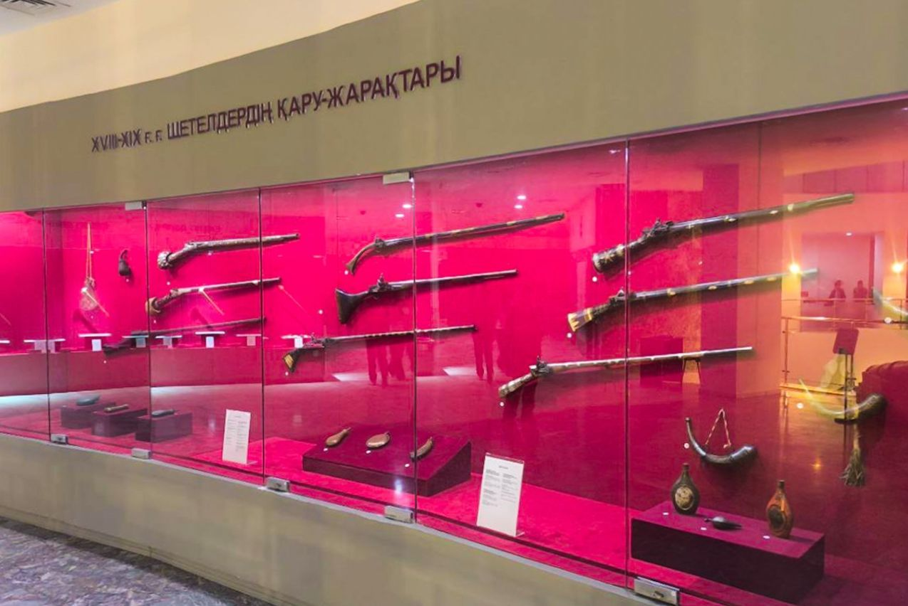

Көне заман – XIX ғасыр
10 аялдаманың 2-і
Сауыт, садақ, дулыға және ат жерлеу орны: ең көне мәдениеттерден XIX ғасырға дейінгі даланың әскери әлемі.

Даланың әскери дәстүрлері
Зал көне кезеңдерден XIX ғасырға дейінгі әскери дәстүрлер мен қарудың қалыптасуын көрсетеді. E-Museum тас және темір дәуірінің археологиялық материалдарын сипаттайды, ал Orda.kz экспозицияда сақ, Алтын Орда және Қазақ хандығы тарихына қатысты нағыз археологиялық олжалар мен реконструкциялар бар деп хабарлайды.
Галерея зергерлік қорапша сияқты жарықтандырылған: сауыт киген мүсіндер қою қызыл қабырғалардың алдында тұр, жеке дулығалар ақ тұғырларда жатыр, ал шабандоздар салынған кескіндемелі фон заттар шыққан ландшафтты көрсетеді.
Тарихи кезеңдер
- Көне археологиялық мәдениеттер
- Ерте дала қоғамдары
- Түркі тарихи кезеңі
- Алтын Орда кезеңі
- Қазақ хандығы
- XVIII–XIX ғасырлар
Қару-жарақ және артефактілер
- Садақ пен оқ
- Дала соғыстарындағы маңызды қашықтан ататын қару.
- Қылыш пен қанжар
- Тарихи жинақтарда көрсетілген жақын ұрыс қаруы.
- Сауыт
- Қару мен тактиканың өзгеруіне жауап ретінде дамыған қорғаныс жабдығы.
- Қалқан
- Дөңгелек қалқандар, кейбіреулері жануарлар мен шабандоздар кескінімен әшекейленген.
- Атыс қаруы
- XVIII–XIX ғасырлардағы ұзын ұңғылы мылтықтар.
Ат және дала
Ең әсерлі экспонаттардың бірі — қайта жасалған жерлеу шұңқырына жатқызылған ат қаңқасы. Дала халықтары үшін ат соғыстың, жолдың және мәртебенің негізі болды, ал ат жерлеу орындары дала археологиясындағы ең танымал олжалардың қатарына жатады.
Осы залдан фотосуреттер
Фотоны толық өлшемде ашу үшін басыңыз.




